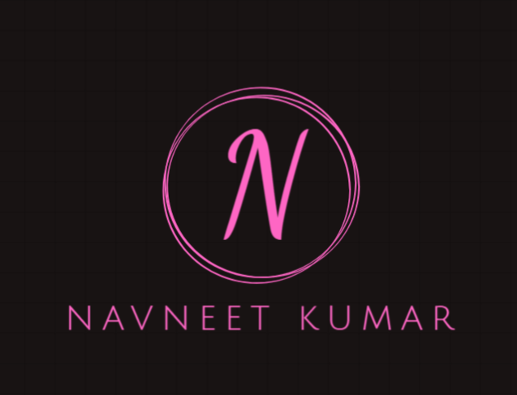
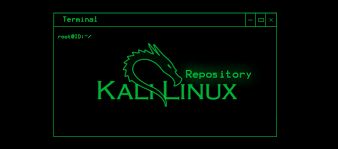
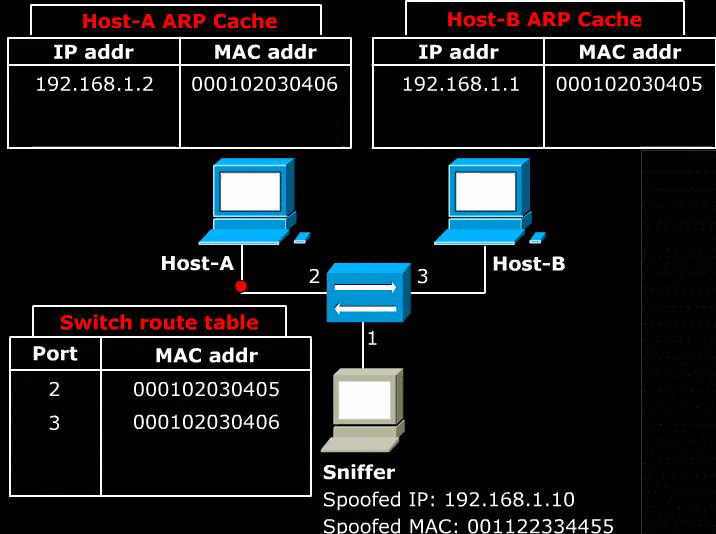
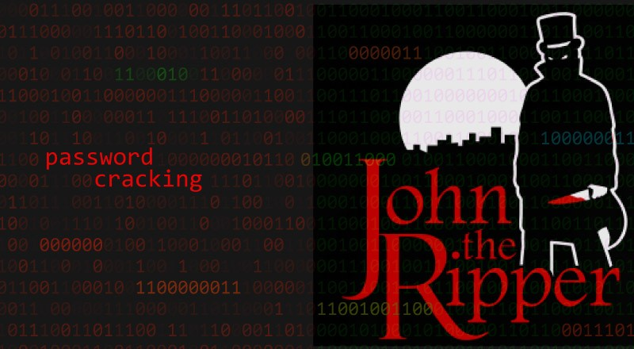
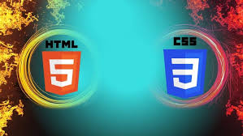

NAME--ꪀꪖꪜꪀꫀꫀꪻ ᛕꪊꪑꪖ᥅
i love to explore cyber security.
cybersecurity is unique domain and its is important for our new generation
Education(school life)
class10: 80 %
class11:77%
class12:75%
College life

skill
- Skill:Web devlopment
- Language:c++
- TECH :WORKING---
CYBER SECURITY
Cyber Security has become a top priority among organizations due to the amount of confidential data and financial records that flow into their systems regularly. The regular need for technology to carry out almost every single task has resulted in the proliferation of cybercrime.
- Kali Linux

- cain and abe

- john the ripper

AREA OF INTREST

- Networking
- CSS
CSS, or Cascading Style Sheets, is a stylesheet language used to describe the presentation of a document
written in a markup language,
most commonly HTML. It is a fundamental technology of the World Wide Web, working alongside HTML and JavaScript to create interactive and visually appealing web pages.

- data science